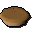
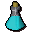

Legends Guild General Store.
Inventory config
generallegendsRun by  Fionella. Open in knowledge graph →
Fionella. Open in knowledge graph →
Located in: Legends Guild
Stock
| Item | Stock | Value | Sells for |
|---|---|---|---|
| 20 | 200 gp | 310 gp | |
 Apple pie | 5 | 30 gp | 46 gp |
 Attack potion(3) | 3 | 12 gp | 18 gp |
| 500 | 12 gp | 18 gp |
Shop sells at 155.0% of item value and buys at 55.0%.
This is a general store: it accepts any tradeable item.